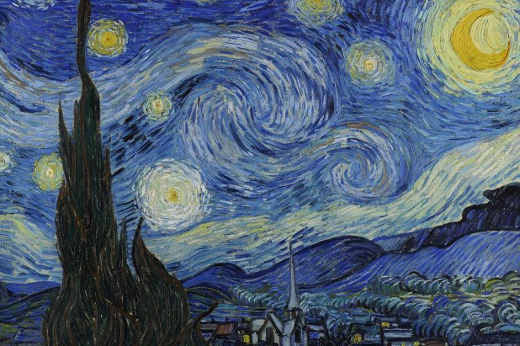

The year of 1889,Vincent Van Gogh created the painting The Starry Night during his stay in Saint-Paul-de-Mausole assylum in France
The swirling sky, shining stars, and the bright moon has inspired generation of artist around the world

A Experience of Vincent Van Gogh's masterpiece through interactive digtial media.
The year of 1889,Vincent Van Gogh created the painting The Starry Night during his stay in Saint-Paul-de-Mausole assylum in France
The swirling sky, shining stars, and the bright moon has inspired generation of artist around the world
This project remediates is a traditional painting that is merged into an immsersive experience. With motion, interation and storytelling, users engage with the artwork in the ways impossible on canvas